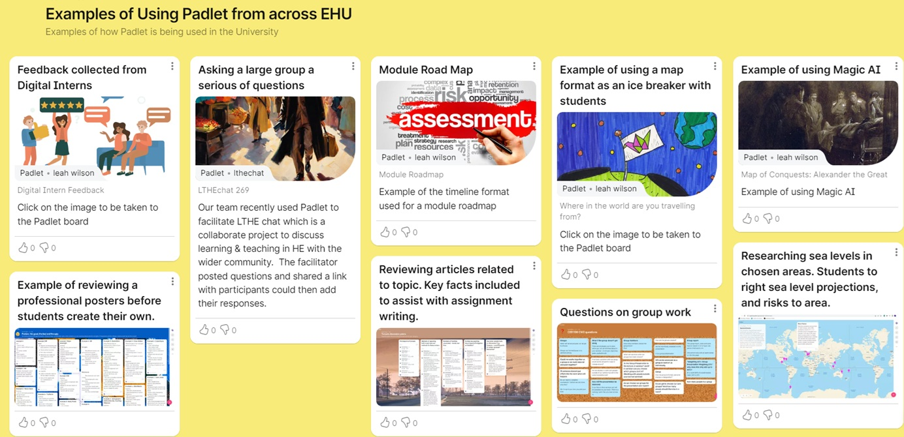

Padlet
Padlet is a versatile online platform designed for collaboration and sharing content in an engaging and interactive way. It functions as a digital bulletin board where users can post text, images, videos, links, and other types of content.
Ease of Use
Padlet excels in simplicity and user-friendliness. Creating a Padlet board is as easy as selecting a layout, adding content, and organizing it using drag-and-drop functionality. Whether you're a teacher designing an engaging lesson plan or a student brainstorming for a project, Padlet removes barriers and makes sharing ideas effortless!
Collaboration
One of Padlet's most powerful features is its ability to foster collaboration within a group of people with the same set of goals. Whether they're adding text, videos, links, or images, it allows multiple users to contribute to a single board in real time, making it an ideal tool for team projects, interactive workshops and even classroom activities.
Rich Media Support
Padlet goes beyond simple text by supporting a wide range of media types, including videos, images, audio files, GIFs, and even embedded links. This versatility makes it a comprehensive tool for diverse tasks, from showcasing a portfolio to telling a story visually. By turning conventional presentations into multimedia-rich experiences, it becomes really useful for educators.
Feeling curious to give it a try?
Try it out!